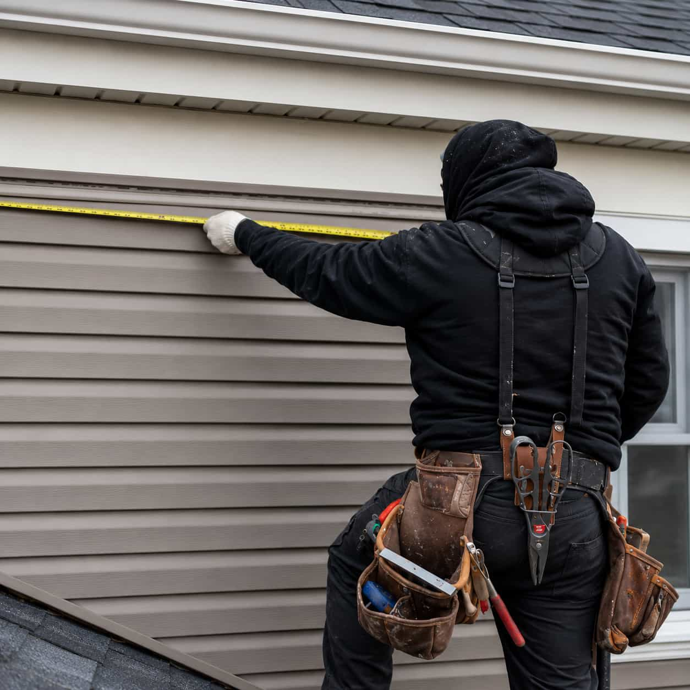

Submit details
Describe the siding issue, visible damage, affected area, urgency, property type, and location.
Service overview
Siding repair requests may involve loose panels, cracks, gaps, storm impact, damaged trim, moisture-related concerns, or localized exterior wear. Exterra helps homeowners describe the issue clearly before provider conversations begin.
Exterra is not a siding repair company and does not perform siding repairs directly. Participating providers supply final pricing, scheduling, warranty information, licensing details, insurance details, availability, and service terms.

Matching path for this service
Exterra helps frame the repair request. Participating providers supply final availability, quote scope, timing, warranty details, and service terms.
Describe the siding issue, visible damage, affected area, urgency, property type, and location.
The request is organized around siding repair and your local provider availability.
Participating providers may contact you to discuss repair scope and provider-supplied terms.
Compare availability, quote details, warranty terms, and provider communication before moving forward.
Siding repair is usually the right starting category when a homeowner sees specific damage or localized exterior issues. Providers may discuss the affected area, possible repair scope, material match, preparation, timing, and quote details. Exterra does not diagnose or perform the repair.

What providers may discuss
Participating providers may discuss visible siding damage, material match, affected sections, access, preparation, timing, warranty terms, quote details, and whether a repair or another project category may be more appropriate.
Exterra does not inspect siding, diagnose the issue, or guarantee that a repair is possible. Homeowners should review provider-supplied information and verify credentials before hiring any provider.

Comparison factors
Platform request numbers